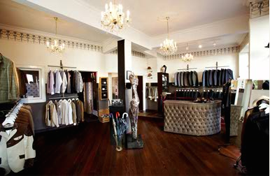

Spreeblick wünscht uns einen Guten Morgen, und zwar mit nichts besserem als diesem Klassiker: James Brown РI feel good:
Happy Feet!
Danke und ein Moin Moin zurück nach Berlin!
Spreeblick wünscht uns einen Guten Morgen, und zwar mit nichts besserem als diesem Klassiker: James Brown РI feel good:
Happy Feet!
Danke und ein Moin Moin zurück nach Berlin!
Nach dem Tod von Michael Jackson wurde ja schon so einiges cooles Zeuch ausgegraben, aber das hier übertrifft bei weitem alles bisher gesehene. Jacko (mit rotem Hut) macht den Flat Foot Floogie @ The Jacksons Variety Show, 1977:
http://www.youtube.com/watch?v=R1JY58dQ7_o
Top! [via TanteUschi]
Ui wasn das? Am 10. Oktober 2009 startet der erste internationale Ugly Dance Worldcup in Hamburg. Gesucht wird das spacigste, uglyste, lustigste & abdance formations Team überhaupt. Für Vorrunde Video aufnehmen und jetzt einschicken, dann später in Hamburg live abgehn und nach alter Breakdance-Jam-Manier seine Crew in den Ugly Dance Himmel batteln. Wer ist dabei?
Hab mir gerade mal die Team Videos angeschaut, Dance Trash pur – wie geil, komm ausm Lachen nicht mehr raus… Tanzen macht Spa√ü!
Alle Infos hier: http://uglydanceworldcup.com
Schön wars gestern! Wer nicht genung vom Viertel und Swing bekommen kann, sollte sich heute ab 22.00 Uhr in die Druckerei begeben Рda rocken & swingen The Ricky Kings mal kräftig ab!
Die Jungs bitte nicht verwechseln mit:
Nach dem schönen Swingtanzsoirée im Gängeviertel vor zwei Wochen swingt am Donnerstag noch einmal:
“Swing in die Gänge II” – ein Swingtanzsoirée im Gängeviertel
Die Swingschleuder kommt wieder in die G√§nge und beschallt das Viertel erneut mit Swingmusik von Damals bis Heute. Es wird getanz, geschwoft und Neulingen gerne auch gezeigt. Am Donnerstag Abend ab 21:00 Uhr, im Geb√§ude ‚Fabrik‘ auf sch√∂nen Holzfu√üboden¬Ö Eintritt Frei!
Gängeviertel, Valentinskamp, Hamburg
Die Charlotte Roche hatte am Freitag ihre Premieresendung von 3nach9 und hat dazu gleich mal gute Musiker eingeladen:
Kitty, Daisy & Lewis mit Going up the country – Live!
Bissl spontan aber heute Abend heisst wieder Swing Jugend in der [qype id=“174055″] mit Swingy the Kid und Little Miss Hiccup!
Swing Jugend Let´s Dance, lädt wieder zum Fröhlichen herumswingen ein. Bei Wild Jump Blues, Nasty Swing, Good old R&B and Flic Flac Jive
lassen wir hoffentlich wieder die Hütte bouncen. Nach dem erfolgreichen Einstieg ins DJ-dasein, ist auch wieder LITTLE MISS HICCUP dabei, also freut euch auf einen wundervollen Abend!!!
ALLE SWINGTÄNZER HABEN FREIEN EINTRITT!!!
Okay, die Lindy Hop Basics haben wir ja so langsam drauf, aber wie schauts denn mit Balkanbeatz aus? Bei rare.de hab ich eine sch√∂ne kleine ‚Anleitung‘ gefunden. Am besten gef√§llt mir der letzte Punkt:
Gebe alles her, was der Körper hergeben kann, am Ende muss der Schweiß auf Deiner Stirn und im Gesicht eine glückliche Erschöpfung stehen.
Kann ich nur zustimmen – hier der Rest: http://rare.de/anleitung-zum-tanzen-von-balkanbeats
√úbrigends: der King of Balkanbeatz Shantel, bespielt am Samstag das [qype id=“42265″] mit seiner neuen „Planet Paprika“ Scheibe. Hin gehn, anh√∂rn und alle her geben. Jiihaa – hey, hey, hey!
Auch dazu passend, die schöne Zusammenstellung von Balkanmixes drüben bei Fabian.
Heute hat ein guter Freund von mir Geburtstag, glaub das gefällt ihm:
Der Blog The Sartorialist hat viele schöne Fotos von Menschen in schicke, ausgefallene und stylische Klamotten tragen. Von Damals bis Heute von streng bis verrückt und bunt. Meistens auf den Strassen New Yorks spontan fotografiert.
Besonders gut gefallen mir diese Bilder, wohl an einem Tanznachmittag auf Governor’s Island (New York) fotografiert. Viele Swing√§nzer, G√§ste und Musiker im original Style – schick!
Da kann man sich noch so einiges abgucken!

Das Hamburger Modelabel [qype id=“106955″] veranstaltet am Samstag wieder einen Super Sale, dieses Jahr erstmalig in den R√§umen des [qype id=“287945″]. Die H√∂hepunkte der vergangenen Kollektionen k√∂nnen zu sensationellen Sonderpreisen erstanden werden. Der Besuch der Ausstellungen ist an diesem Tag kostenfrei.
Im Gängeviertel Hamburg ist gerade viel los! Seit nun schon mehreren Jahren stehen die 11 Häuser des Viertels leer und sollen von einem Investor durch neue Bürogebäude ersetzt werden. Doch nix ist bis jetzt geschehen und so wird nun das Viertel wieder mit viel Kunst, Musik und Aktionen bespielt, und neu zum Leben erweckt. Jeden Tag ab 13.00 Uhr öffnen die Gallerien und Räume Рein Besuch lohnt sich auf jeden Fall. Natürlich darf da auch Swingtanz nicht fehlen, somit Aktion:
„Swing in die G√§nge“ – ein Swingtanzsoir√©e im G√§ngeviertel
Die Swingschleuder kommt in die G√§nge und beschallt das Viertel mit Swingmusik von Damals bis Heute. Es wird getanz, geschwooft und Neulingen gerne auch gezeigt. Am Donnerstag Abend ab 20:30 Uhr, je nach Wetterlage drau√üen in der Passage oder drinnen auf sch√∂nen Holzfu√üboden… im Zweifelsfalle den Ohren nach. Bier, Heizpilze und MP3-Player mitbringen!
Gängeviertel, Valentinskamp 40, Hamburg
Mehr zur Aktion „Komm in die G√§nge“:
Ok, ist schon bissl älter habs aber eben erst bei rare.de gefunden: Rupa and the April Fishes aus San Francisco. Schöner Gypsy Swing/Jazz, mit leichtem Hauch an französischem Chansons und balkanischen Beatz. Durchaus tanzbar.

Neu in Hamburg: seit nun schon mehrere Wochen bietet Michael Pohle in seinem Blog Tanz-Michel ausführliche Informationen rund ums Tanzen in Hamburg an. Quasi DAS Hamburger Online-Magazin für alle Tänzer Рist nur so voll mit vielen Terminen, Videos und Fotos rund um Standard, Latein, Salsa, Tango, Irish und natürlich auch Swingtanz!